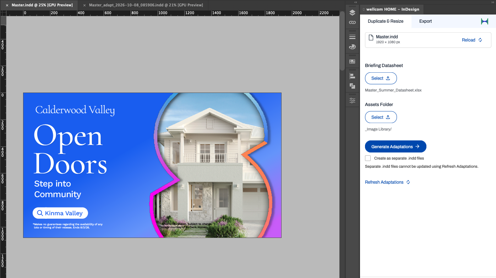

Role: UX/UI Designer (end-to-end), Developer (front-end)
Tech Stack: Adobe UXP, React, InDesign DOM API, HTML, CSS, AI-assisted research synthesis

The production design team was bogged down by highly repetitive layout tasks. For localized campaigns (e.g., regional collateral with unique location names and images), designers had to manually duplicate master files, resize them into various aspect ratios and meticulously copy-paste localized assets into every variation. This manual workflow was time-consuming and highly susceptible to human error.
Data Ingestion: Users drag and drop an Excel spreadsheet directly into the plugin’s UI. This sheet contains the localized copy, relevant data (e.g. heading, subheading, logo, etc), target dimensions and local file paths for images.
Manual Setup & Tagging: Designers prepare their master layouts (e.g. one landscape, one portrait) by manually tagging text and image frames using InDesign’s native layers panel.
Batch Generation: The plugin parses the spreadsheet, maps the data to the tagged layers, programmatically pulls the correct images from the local folder structure and generates the variations within the document or as individual files.
A significant technical challenge was ensuring structural integrity when generating drastically different dimensions. Relying solely on InDesign’s native Auto Layout was insufficient. I engineered custom mathematical logic within the plugin to dynamically calculate X/Y coordinates and scaling properties. This logic ensured text boxes wouldn't clip when copy length changed, and forced surrounding elements and images to intelligently reflow and maintain relative margins based on the new boundaries.
As an MVP, the goal was to validate the workflow and reduce immediate manual effort while intentionally scoping out complex integrations.
Data & Security: Direct Google Sheets integration was deferred to ensure proper OAuth authentication and security protocols could be established later; the local Excel workflow served as a secure workaround.
State Management: Without an integrated database to persist settings, layer mapping and configuration memory are currently limited per session.
Next Steps: Phase 2 includes building a dedicated UI within the React panel to replace manual layer tagging, implementing persistent database storage for user preferences, and finalizing the Google Sheets API integration.